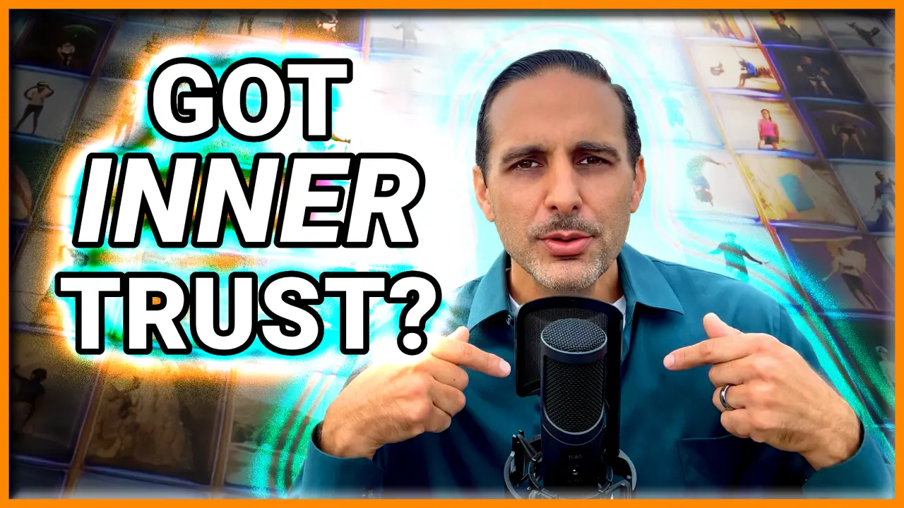

Why Trustworthiness Starts Within
What if I told you that being truly trustworthy isn’t about how others see you—but about how you see yourself? Trustworthiness isn’t just about keeping promises to others; it’s built from the inside out. It starts with the small commitments you make to yourself daily.
When you trust yourself—your word, your actions, your integrity—others naturally follow suit.
Real-Life Lessons in Trust
In my twenties, I had a friend who struggled with self-trust. He often made commitments—to work out, to take on challenges—but rarely followed through. His lack of follow-through didn’t just affect his confidence; it affected how others, including his family and colleagues, saw him.
It wasn’t until he started keeping small promises to himself that things changed. He gained confidence, new opportunities opened up, and, most importantly, he felt more reliable to himself and others.
The Science of Inner Trust
Research from the University of California, Berkeley, shows that when we break promises to ourselves, our brain releases cortisol—the stress hormone—leading to anxiety and self-doubt. However, when we follow through on commitments, dopamine is released, reinforcing confidence and trust.
Similarly, Influence by Robert B. Cialdini, PhD highlights how consistency plays a crucial role in building credibility and trustworthiness. By keeping even the smallest commitments, we create a momentum of reliability.
Actionable Steps to Strengthen Inner Trust
- Keep Small Promises: Start with simple commitments like waking up on time or finishing a small task. Each success builds momentum.
- Hold Yourself Accountable: Use a journal or accountability partner to track your progress.
- Reflect on Your Wins: End each day by noting where you followed through. Celebrating small wins reinforces confidence.
Why This Matters
When you become trustworthy to yourself, your relationships, career, and personal growth all benefit. Trust is contagious—when you model reliability, others around you respond in kind. Studies show that teams built on trust experience greater collaboration, creativity, and success.
If you’re ready to transform your life through trust, watch the full episode: "Build Inner Confidence: Unlock the Secrets to Trustworthiness".
On This Topic
📚 Your inner-trust reflects to your trustworthiness.
Check out the Related Resources below for books and more content on building authentic confidence, enabling trust throughout your life, learning through stories, science, the best books, with tips to help you starting today.
Article for career/professional focus:
Trustworthiness: The Hidden Key to Career Growth and Leadership
Related Resources
- Episode
-  Build Inner Confidence: Unlock the Secrets to Trustworthiness 3/25 Trust begins within. Learn how cultivating self-trust and confidence radiates outward, creating stronger relationships and deeper connections. This episode highlights the importance of aligning actions with values and provides actionable steps for becoming a more trustworthy individual.
- Episode Podcasts
-  Apple Spotify YouTube
- Books on Trustworthiness
-
📗 Dare to Lead: Brave Work. Tough Conversations. Whole Hearts. by Brené Brown
Redefining leadership through vulnerability, courage, and empathy, this work offers practical strategies for building trust, embracing discomfort, and fostering a culture of authenticity.
⧠Other editions: 📖 Paperback, 📱 Kindle, 🧠Audiobook | ğŸ—ºï¸ Intl: Chinese, German, Portuguese -
📘 Influence: The Psychology of Persuasion by Robert B Cialdini PhD
Explore the psychology behind why people say yes, revealing six powerful persuasion principles that shape decision-making and how they can be applied ethically.
⧠Other editions: 📖 Paperback, 📱 Kindle, 🧠Audiobook | ğŸ—ºï¸ Intl: Chinese, French, German, Spanish (En Español)